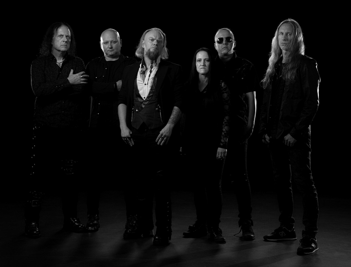
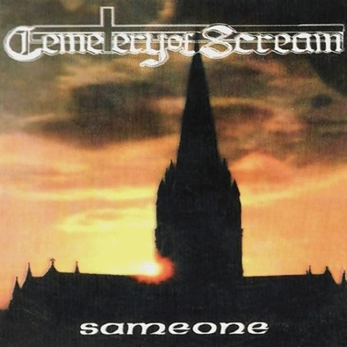
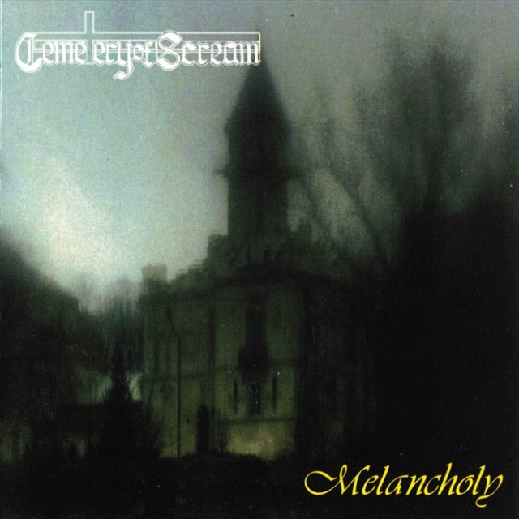
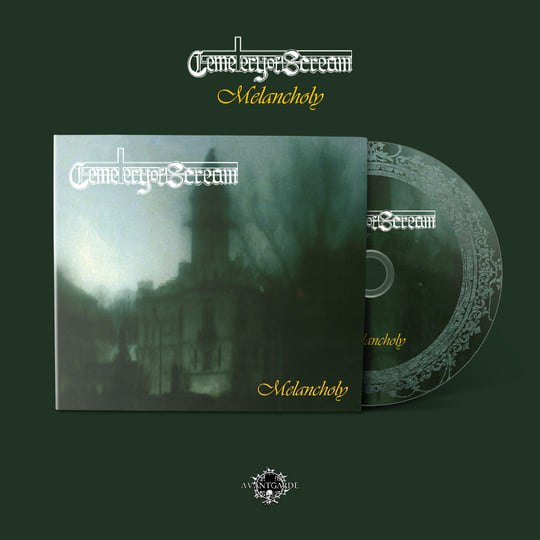
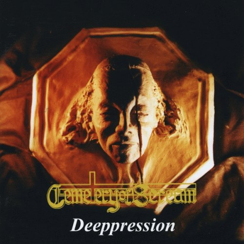
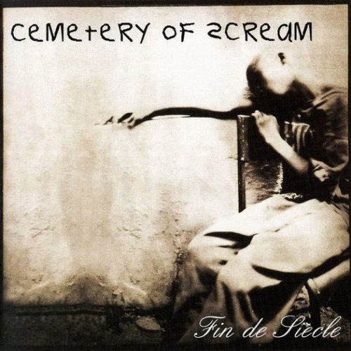
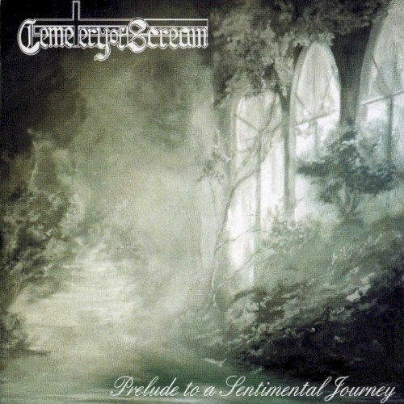
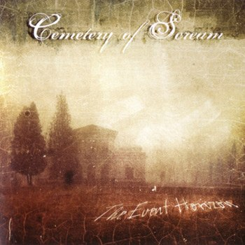
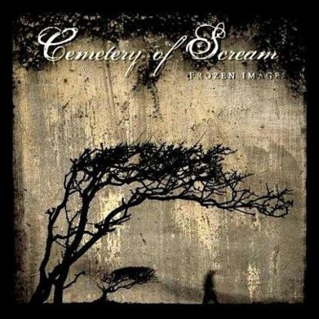
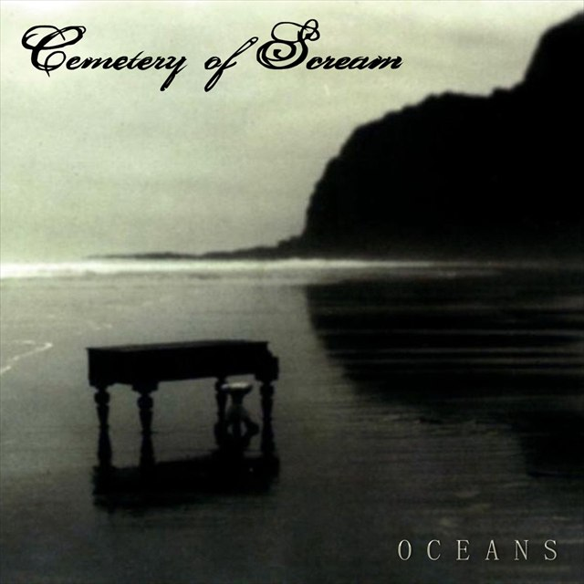

Kraków, Poland · Doom / gothic metal
Cemeteryof Scream
Three decades between melancholy and weight.
Atmospheric doom, gothic space and six albums that refuse to repeat the past.
01Band
A history written
in low frequencies.
Cemetery of Scream are a Kraków band who have been folding the weight of doom metal into gothic melancholy, keyboard-built space and a need to tell stories through sound since the early 1990s.
The band began in Kraków around the work of guitarist Marcin Piwowarczyk and drummer Grzegorz Książek. After playing in faster thrash and death metal groups, they chose a different route: slower tempos, deeper tones and compositions in which silence matters as much as the riff.
The debut Melancholy (1995) set the language the band would return to for decades: heavy guitars, atmospheric keyboards and melancholy treated as a compositional principle rather than decoration. Deeppression, Prelude to a Sentimental Journey, The Event Horizon and Frozen Images pushed that language toward a more melodic, gothic sound.
After a fourteen-year gap between releases, the band returned with Oceans (2023), their sixth studio album: older intensity meeting a more spacious, mature form. This is music that does not try to recreate the past. It tries to transform it.
Melancholy is not a mood here. It is a method.

02Discography
Oceans. A return
after fourteen years.
Latest album / 2023
Oceans
Oceans is the sixth studio album from Cemetery of Scream. Thirteen tracks in which doom weight meets gothic melody, ambience and oriental motifs. The album was released via Sleaszy Rider Records.
The material recorded in 2015 was lost before it reached the pressing plant. The band recorded the songs again and rearranged them from scratch — hence the more spacious, mature shape of Oceans. Source: No Clean Singing, 2024
Tracklist / 13 tracks
- Oceans
- In the Blue
- Along the Coast
- Sunken Bells on Num-Yabisc
- Aquarius
- House of the Fading Sun
- Time to Let You Go
- It's Full of Stars
- Opening of the Mouth
- September Folk
- I Shine
- Final Experience
- Everything Rhymes Goodnight
Complete discography · 1993—2023
Every release.
In order.
From the Sameone demo (1993) to Oceans (2023): six studio albums, one EP and a demo tape. Covers, release details and complete tracklists in one place.
6 studio albums · 1 EP · 1 demo
-

01 / 1993Demo Sameone
The band's first demo. The 1993 material set the doom foundations that later albums would expand.
- Label
- Gamma (some catalogues also list Croon Records)
- Recorded
- Gamma Studio, Kraków · Apr 1993
- Length
- 31:27
- Editions
- Metal Mind Productions, CD, 2003
Tracklist 9 tracks
- Intro (Ebony Tears)02:22
- The Shadow of Notre Dame Cathedral03:46
- Sleeping in the Mystical World02:04
- Procession of the Time06:18
- Apocaliptic Visions00:48
- Unfathomable Truth05:52
- Cry of Soul03:06
- In the Eternal Sin05:18
- Outro (Requiem)01:53
-

02 / 1995Studio album Melancholy
The studio debut. The 2021 edition restores the interludes and adds “The Shadow of Notre Dame Cathedral” and an orchestral “Melancholy”.
- Label
- Croon Records
- Catalogue
- CCD 001
- Recorded
- Gamma Studio, Kraków · Jul–Sep 1994
- Length (1995)
- ≈ 70 min (12 tracks)
- Editions
- Metal Mind 2003 (12 tracks) · Avantgarde Music 2021 (18 tracks, remaster, digipak + vinyl)

2021 / reissue
Avantgarde Music: remaster, 18 tracks, digipak with booklet and the first vinyl edition.
Tracklist 18 tracks
- Prologue02:54
- Melancholy06:08
- Interlude02:36
- Dolor Ante Lucem04:43
- Interlude II03:10
- Gods of Steel06:01
- And just the birds..02:46
- Apocalyptic Visions (II)05:26
- Anxiety07:54
- Interlude III02:38
- Landscape of Sadness04:36
- Lost Flowers04:43
- Interlude IV01:26
- Violet Fields of Extinction05:32
- Interlude V00:44
- Epilogue02:58
- The Shadow of Notre Dame Cathedral05:35
- Melancholy (Orchestral version)04:44
-

03 / 1997Studio album Deeppression
The second studio album. The 1998 Serenades edition for Europe keeps the same eight-song running order.
- Label
- Croon Records · Serenades Records (Europe, 1998)
- Catalogue
- CCD 010 · SR 015
- Recorded
- Gamma Studio, Kraków · Jun–Jul 1997
- Length
- ≈ 48 min
- Editions
- Metal Mind Productions, 2003 · MMP CD 0217
Tracklist 8 tracks
- Whisper / Touch07:40
- Breeze07:40
- Episode Man04:39
- Ironic05:09
- Walkin' on Air04:57
- Reveal the Rainbow05:51
- Cruel06:39
- Float to Escape05:30
-

04 / 1999EP Fin de siècle
An EP dedicated to the war in the Balkans. Six tracks, including a cover of Porcupine Tree's “Radioactive Toy”.
- Label
- Self-released / local edition (1999)
- Length
- 26:23
- Editions
- Metal Mind Productions, CD, 2003
Tracklist 6 tracks
- Colder Than Ever06:18
- Descent03:11
- Insincere05:54
- Introduction: Dimension Zero00:48
- Radioactive Toy (Porcupine Tree cover)05:48
- Apocalyptic Visions (Part III)04:24
-

05 / 2000Studio album Prelude to a Sentimental Journey
Some editions contain 14 tracks; the fifteenth is a Porcupine Tree cover added as a bonus.
- Label
- Mystic Production
- Catalogue
- MystCD 007
- Recorded
- Gamma Studio, Kraków · Apr–May 2000
- Released
- 20 October 2000
- Length
- 1:01:31 (15 tracks)
- Editions
- Licensed editions in Europe, Latin America and Russia · “Radioactive Toy” only on some pressings
Tracklist 15 tracks
- Time Is Shadow02:03
- Haila05:37
- In the Cemetery Garden02:00
- The Ray of Cry05:19
- Overcall04:08
- The Chess at the Foot of the Mountain01:17
- Cult05:55
- A Game of Chess05:10
- Colder than Ever04:30
- The Hourglass04:35
- Towards to the Final Consciousness01:40
- Bridge to a Desert04:31
- Fall05:40
- When the Sun's Born Red03:17
- Radioactive Toy (Porcupine Tree cover)05:49
-

06 / 2006Studio album The Event Horizon
The fourth studio album, released six years after Prelude to a Sentimental Journey.
- Label
- Metal Mind Productions / CD Maximum
- Catalogue
- MMP CD 0409
- Released
- 2006
- Length
- 45:14
Tracklist 10 tracks
- Prophet06:11
- Ganges06:20
- Komatrance03:44
- On the Border03:49
- Cold Obsession in My Eyes06:39
- Absinthe04:16
- The Secret Window03:50
- Burial Ground05:10
- In His Room03:59
- Where Next?01:16
-

07 / 2009Studio album Frozen Images
Olaf Różański's vocal debut. The standard CD closes with a cover of The Moody Blues' “Night in White Satin”.
- Label
- Metal Mind Productions
- Catalogue
- MMP CD 0654
- Released
- 26 January 2009 (Europe 2 Feb · US 10 Mar)
- Length
- 1:05:02
Tracklist 12 tracks
- Bluebird05:53
- Prince of the City's Lights06:03
- Cat's Grin04:18
- The Bridge of Ashes06:36
- In Your Blood05:51
- Golden Lullaby05:46
- Ritual Fire Dance04:29
- Black Flowers04:46
- A Million as One (As a Million)04:48
- Geisha Out of Dreams05:29
- Sapphire Sun06:41
- Night in White Satin (The Moody Blues cover)04:22
-

08 / 2023Studio album Oceans
The sixth studio album and the first since Frozen Images (2009). The 2015 recordings were lost and the album was recorded again.
- Label
- Sleaszy Rider Records
- Catalogue
- SR-0326
- Released
- 3 November 2023
- Length
- 1:09:53
- Editions
- 6-panel digipak with a 16-page booklet · digital
Tracklist 13 tracks
- Oceans02:15
- In the Blue06:45
- Along the Coast03:03
- Sunken Bells on Num-Yabisc05:59
- Aquarius06:55
- House of the Fading Sun06:43
- Time to Let You Go06:28
- It's Full of Stars05:34
- Opening of the Mouth05:50
- September Folk06:16
- I Shine05:27
- Final Experience06:18
- Everything Rhymes Goodnight02:20
Release data: Encyclopaedia Metallum, Archiwum Polskiego Rocka, Sleaszy Rider Records, Avantgarde Music. Dates and tracklists may vary between editions. Cover artwork remains the property of its owners.
03Live
New dates.
New cities.
There are no confirmed upcoming shows at the moment. The band is open to proposals from clubs, festivals and promoters — in Poland and abroad.
Propose a showIf you are organising an event and would like to check availability, write to us. Include the city, date and nature of the event — we will come back with a clear answer.
Go to the booking brief04Media
Black and white.
And a little red.
Frames from the band archive — portraits, old photographs and a few things that cannot be planned.
Archive / selection

 Enlarge
Enlarge

More frames, press photographs and publication-ready material — on request.
Request materialsPhotographs from the band archive
05Press & EPK
Material that
speaks for itself.
Short, direct materials for promoters, journalists and festivals. No corporate language, no unnecessary files.
- Cemetery of Scream are a doom and gothic metal band from Kraków.
- A history dating back to the early 1990s. Six studio albums.
- Oceans (2023) — 13 tracks, Sleaszy Rider Records.
- Bio, photographs and key details — on request.
06Booking
Put this sound
on your stage.
Clubs, festivals, tours, special events. Tell us what you are planning — we will come back with specifics.
- FacebookSend a message
- LabelSleaszy Rider Records
- EPKRequest materials
The form works locally: it does not send data to a server or store anything. Once completed, it prepares a brief for you to send through the channel of your choice.
Booking brief
Fields marked * are requiredBrief ready
We copied the brief to your clipboard. Open Facebook and paste it into a message to the band.